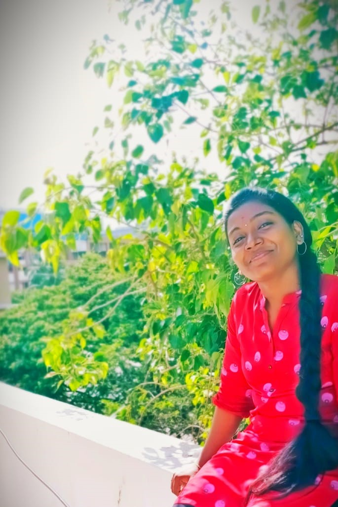

About me

Soundharya S
Programmer
I am an hardworking engineering graduate currently pursuing
final year in B.TECH Information Technology at Sathyabama
Institute of Science and Technology. I am always eager to learn
new skills. I am a self motivated and enthusiastic learner. I
would like to upskill myself by learning new skills whenever I
get a chance. I am good at C, C++, Python, Html, Css, MySql. I
have completed my internship at Progate as a Community
Intern.Progate is an online platform to learn programming. I
have Organized and hosted various online events along with
Student Communities of various Colleges across India.